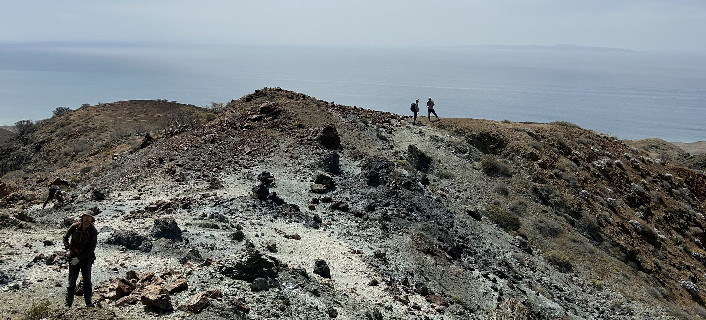

Publications
Last updated: September 27, 2026. For the most recent list, see my Google Scholar profile.

† UIC graduate student advisee ‡ UIC postdoctoral advisee * student co-author ✉ co-corresponding author
In press
- Li, S.-S., Li, B., Sun, Y.-H., Deng, J., Leitchenkov, G., Szilas, K., Hernández-Uribe, D., Talalay, P., Zhang, N., Fan, X.-P., Li, Y.-Z., Gong, D., Zou, Y.-Z., Li, J.-H., & Qiu, K.-F. (in press). Scandium enrichment and release in pyroxene driven by melt and fluid metasomatism: Insights from East Gondwana, Antarctica. American Mineralogist. DOI: 10.2138/am-2025-10035.
2026
- Pramanik, S.†✉, Hernández-Uribe, D.✉, & Dombard, A. J. (2026). Early water on Mars hindered subduction-driven plate tectonics. Journal of Geophysical Research: Planets, 131(8), e2026JE009718. DOI: 10.1029/2026JE009718.
- Tassara, S., Inostroza, A., Olivares, A., Hernández-Uribe, D., Reich, M., Barra, F., Romero, R., Ague, J. J., Tardani, D., & de los Santos Valderrama, C. (2026). The temporal redox and volatile evolution of magmas that formed a supergiant porphyry copper deposit. Earth and Planetary Science Letters, 120139. DOI: 10.1016/j.epsl.2026.120139.
- Wang, J. W., Kapp, P., Holder, R. M., He, J., Hernández-Uribe, D., & Worthington, J. (2026). Polycyclic metamorphism, exhumation, and recycling of subduction complex rocks, Cedros Island, Baja California. Tectonics, e2025TC009340. DOI: 10.1029/2025TC009340.
2025
- Hernández-Uribe, D. & Tassara, S. (2025). Source-oxidized and (super-) wet magmas explain porphyry copper fertility vectors: A thermodynamic modeling approach. Geology, 53(12), 995–1000. DOI: 10.1130/G53405.1.
- Jiang, X., Chen, X., Schertl, H. P., Hoare, L., Cambeses, A., Hernández-Uribe, D., Xu, R., Zheng, Y., & Zhang, W. (2025). Rutile petrochronology and titanium isotope compositions record multiple melt–fluid–rock interactions in a continental subduction zone. Geochimica et Cosmochimica Acta, 400, 94–114. DOI: 10.1016/j.gca.2025.05.024.
- Donoso-Tapia, D.*, Flores, K. E., Martin, C., Hull, S., & Hernández-Uribe, D. (2025). Record of de-serpentinization and re-serpentinization of an exhumed slab sliver: Implications for fluid circulation in subduction zones. Earth and Planetary Science Letters, 653, 119213. DOI: 10.1016/j.epsl.2025.119213.
2024
- Hernández-Uribe, D. (2024). Generation of Archaean oxidizing and wet magmas from mafic crustal overthickening. Nature Geoscience, 17, 809–813. DOI: 10.1038/s41561-024-01489-z.
- Hernández-Uribe, D., Holder, R. M., & Hernández-Montenegro, J. D. (2024). Eclogite thermobarometry: The consistency between conventional thermobarometry and forward phase-equilibrium modelling. Journal of Metamorphic Geology, 42(1), 89–108. DOI: 10.1111/jmg.12747.
- Zheng, Y., Chen, X., Palmer, M. R., Zhao, K., Hernández-Uribe, D., Gao, S., & Wu, S. (2024). Magma mixing and magmatic-to-hydrothermal fluid evolution revealed by chemical and boron isotopic signatures in tourmaline from the Zhunuo–Beimulang porphyry Cu-Mo deposits. Mineralium Deposita, 1–21. DOI: 10.1007/s00126-024-01255-6.
2023
- Hernández-Uribe, D. & Tsujimori, T. (2023). Progressive lawsonite eclogitization of the oceanic crust: implications for deep mass transfer in subduction zones. Geology, 51(7), 678–682. DOI: 10.1130/G51052.1.
- Hernández-Uribe, D., Mattinson, C. G., Regel, M. E., Zhang, J. X., Stubbs, K. A., & Kylander-Clark, A. R. C. (2023). Protracted eclogite-facies metamorphism of the Dulan area, North Qaidam ultrahigh-pressure terrane. Journal of Metamorphic Geology, 41(4), 557–581. DOI: 10.1111/jmg.12708.
- Li, S. S., Qiu, K. F., Hernández-Uribe, D., Gao, Y. X., Santosh, M., Huang, H. C., Zheng, Z. Y., Zhang, Z. L., & Gao, S. C. (2023). Water recycling in the deep earth: Insights from integrated μ-XRF, THz-TDS spectroscopy, TG and DSC of high-pressure granulite. Journal of Geophysical Research: Solid Earth, 128(3), e2022JB025915. DOI: 10.1029/2022JB025915.
- Lindquist, P. C., Condit, C. B., Hoover, W. F., Hernández-Uribe, D., & Guevara, V. E. (2023). Metasomatism and slow slip: Talc production along the flat subduction plate interface beneath Mexico (Guerrero). Geochemistry, Geophysics, Geosystems, 24(8), e2023GC010981. DOI: 10.1029/2023GC010981.
- Palin, R. M., Palmer, Z., Holm-Denoma, C., Hernández-Uribe, D., & Hernández-Montenegro, J. D. (2023). On the occurrence of amphibolite-facies sapphirine, spinel, phlogopite, anorthite, and corundum in the Wet Mountains, Colorado, USA. Lithos, 440–441, 107024. DOI: 10.1016/j.lithos.2023.107024.
- Chen, X., Jiang, S., Palmer, M. R., Schertl, H. P., Cambeses, A., Hernández-Uribe, D., & Zheng, Y. (2023). Tourmaline chemistry, boron, and strontium isotope systematics trace multiple melt–fluid–rock interaction stages in deeply subducted continental crust. Geochimica et Cosmochimica Acta, 340, 120–140. DOI: 10.1016/j.gca.2022.11.019.
2022
- Hernández-Uribe, D. (2022). A re-evaluation of the peak P–T conditions of eclogite-facies metamorphism of the Paleozoic Acatlán Complex (Mexico) reveals deeper subduction. Scientific Reports, 12, 1–7. DOI: 10.1038/s41598-022-25992-8.
- Gutiérrez-Aguilar, F.*, Hernández-Uribe, D., Holder, R. M., & Condit, C. B. (2022). Fluid-induced fault reactivation due to brucite + antigorite dehydration triggered the Mw 7.1 September 19th Puebla-Morelos (Mexico) intermediate-depth earthquake. Geophysical Research Letters, 49(20), e2022GL100814. DOI: 10.1029/2022GL100814.
- Hernández-Uribe, D., Spera, F. J., Bohrson, W. A., & Heinonen, J. S. (2022). A comparative study of two phase equilibria modeling tools: MORB equilibrium states at variable pressure and H2O concentrations. American Mineralogist, 107, 1789–1806. DOI: 10.2138/am-2022-8211.
- Chen, X., Schertl, H. P., Hart, E., Majka, J., Cambeses, A., Hernández-Uribe, D., & Zheng, Y. (2022). Mobilization and fractionation of Ti-Nb-Ta during exhumation of deeply subducted continental crust. Geochimica et Cosmochimica Acta, 319, 271–295. DOI: 10.1016/j.gca.2021.11.024.
2021
- Hernández-Uribe, D. & Gutiérrez-Aguilar, F.* (2021). The versatility of petrological modeling: thermobarometry of high-pressure metabasites from the Renge and Sanbagawa belts and phase evolution during warm subduction at Nankai. Island Arc, e12406. DOI: 10.1111/iar.12406.
- Gutiérrez-Aguilar, F.*, Hernández-Uribe, D., Vite-Sánchez, O., Schaaf, P., Arrieta-García, G. F., Solís-Pichardo, G., & Hernández-Treviño, T. (2021). New insights into the petrogenesis of the Puerto Vallarta Batholith, Mexico: Evidence from petrology, zircon petrochronology, and phase equilibrium modeling. Journal of South American Earth Sciences, 109, 103297. DOI: 10.1016/j.jsames.2021.103297.
- Hernández-Montenegro, J. D., Palin, R. M., Zuluaga, C. A., & Hernández-Uribe, D. (2021). Archean continental crust formed by magma hybridization and voluminous partial melting. Scientific Reports, 11, 1–9. DOI: 10.1038/s41598-021-84300-y.
2020
- Hernández-Uribe, D., Hernández-Montenegro, J. D.*, Cone, K. A., & Palin, R. M. (2020). Oceanic slab-top melting during subduction: implications for trace-element recycling and adakite petrogenesis. Geology, 48(3), 216–220. DOI: 10.1130/G46835.1.
- Hernández-Uribe, D., Palin, R. M., Cone, K. A., & Cao, W. (2020). Petrological implications of seafloor hydrothermal alteration of subducted mid-ocean ridge basalt. Journal of Petrology, 61(9), 1–18. DOI: 10.1093/petrology/egaa086.
- Palin, R. M., Santosh, M., Cao, W., Li, S. S., Hernández-Uribe, D., & Parsons, A. (2020). Secular metamorphic change and the onset of plate tectonics. Earth-Science Reviews, 207, 103172. DOI: 10.1016/j.earscirev.2020.103172.
2019
- Hernández-Uribe, D. & Palin, R. M. (2019). Catastrophic shear-removal of subcontinental lithospheric mantle beneath the Colorado Plateau by the subducted Farallon slab. Scientific Reports, 9, 8153. DOI: 10.1038/s41598-019-44628-y.
- Hernández-Uribe, D. & Palin, R. M. (2019). A revised petrological model for subducted oceanic crust: insights from phase equilibrium modelling. Journal of Metamorphic Geology, 37, 745–768. DOI: 10.1111/jmg.12483.
- Hernández-Uribe, D., Gutiérrez-Aguilar, F.*, Mattinson, C. G., Palin, R. M., & Neill, O. K. (2019). A new record of deeper and colder subduction in the Acatlán complex, Mexico: Evidence from phase equilibrium modelling and Zr-in-rutile thermometry. Lithos, 324, 551–568. DOI: 10.1016/j.lithos.2018.10.003.
2018
- Hernández-Uribe, D., Mattinson, C. G., & Zhang, J. X. (2018). Phase equilibrium modelling and implications for P–T determinations of medium-temperature UHP eclogites, North Qaidam terrane, China. Journal of Metamorphic Geology, 36(9), 1237–1261. DOI: 10.1111/jmg.12444.
2016
- Maldonado, R., Ortega-Gutiérrez, F., & Hernández-Uribe, D. (2016). Garnet–chloritoid–paragonite metapelite from the Chuacús Complex (central Guatemala): new evidence for continental subduction in the North America–Caribbean plate boundary. European Journal of Mineralogy, 28, 1169–1186. DOI: 10.1127/ejm/2016/0028-2578.